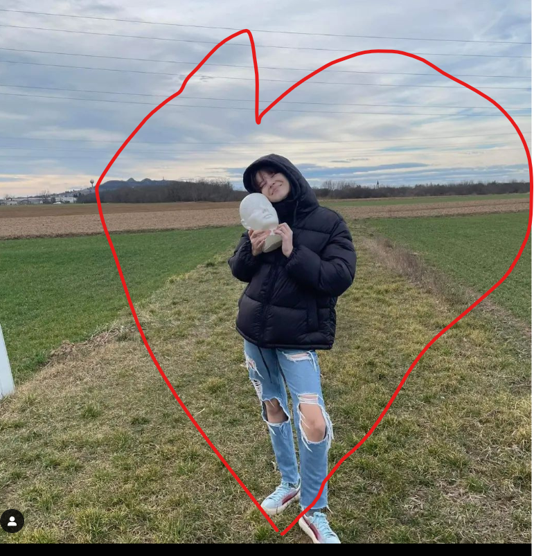

tudom-tudom, nem szeretnél erről beszélni. DE te egy nagyon fontos ember vagy az életben és azt szeretném hogy az is maradj. Csináltam butaságokat, de akkor is elszeretném mondani te egy imádnivaló-tökéletes lány vagy. Ezért szeretném ebbe a formába megkérdezni tőled... Lennél-e újra a barátnőm, és megprobálnánk újra? Ígérem, sokkal jobb leszek mint régebben.
